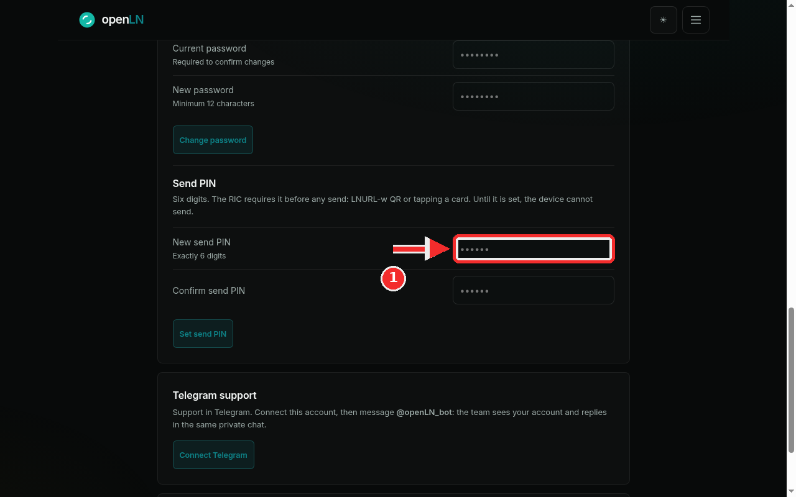
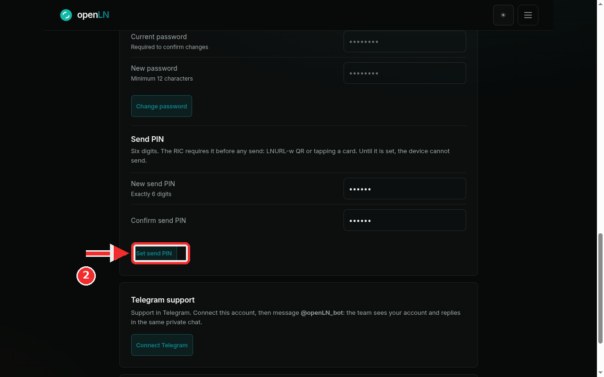
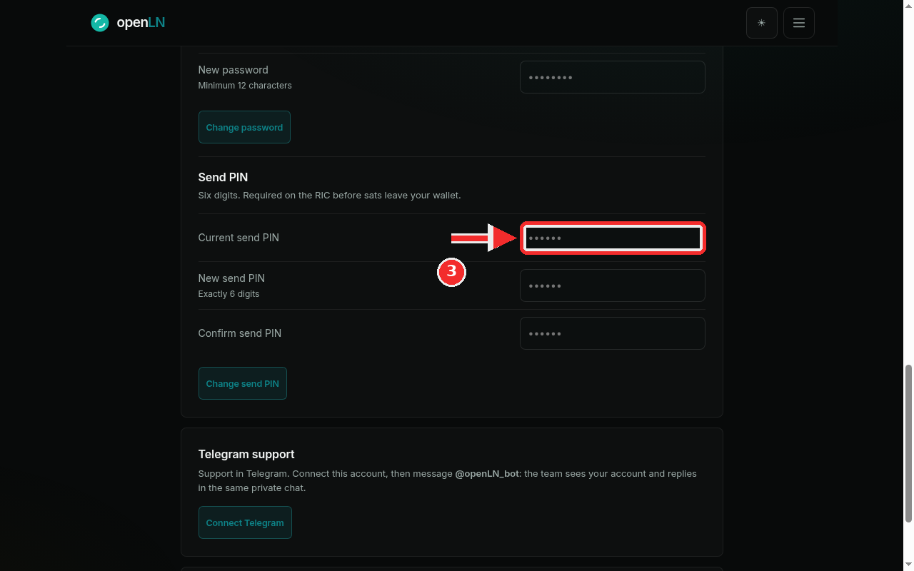

How to set or change your send PIN
The send PIN is the six digit code that guards sats going out of your account. The RIC requires it before any send, whether that is an LNURL-w withdrawal QR or a tap of a card, and the wallet asks for it too when you send from there. Receiving never needs it. This guide shows you how to set the PIN the first time, and how to change it later. It takes about a minute, and nothing is charged during setup.
- You are signed in to your openLN account and can open Preferences (the page is at
/app#settings). The Send PIN block sits in the Security card. - You have six digits in mind. The form checks only two things: that the PIN is exactly six digits, and that both entries match.
- You can also arrive from the wallet home nudge ("Set your 6-digit send PIN") or the gate card on the RIC page. Both jump straight to this block.
- Receiving keeps working with no PIN set. Nothing sends until one exists.
Fill in New send PIN
In the Send PIN block, the subcopy states the rule: "Six digits. The RIC requires it before any send: LNURL-w QR or tapping a card. Until it is set, the device cannot send." So this PIN is what authorizes sats leaving your account or your RIC. An LNURL-w withdrawal QR waits for it, a card tap that sends waits for it, and sending from the wallet waits for it. Receiving never asks for it, so customers can pay you with no PIN at all.
Type exactly six digits into the New send PIN field. The small label under it reads "Exactly 6 digits", and the field masks what you type as dots, one dot per digit. Pick a code you will remember, because the RIC asks for it on every send.

Repeat it and press Set send PIN
Type the same six digits again into Confirm send PIN. openLN checks the form before it saves: a PIN that is not exactly six digits is refused with "Send PIN must be exactly 6 digits", and two entries that differ are refused with "The two entries do not match". Nothing is stored until both checks pass.
When both fields hold the same six digits, press Set send PIN. The red badge in this screenshot points at it.

After saving: your PIN is set, and it can be changed here
When the save succeeds, the card replies Send PIN saved and refreshes itself a moment later. The refreshed card is the one in this screenshot: it has gained a Current send PIN field at the top, and the button now reads Change send PIN.
To change the PIN later, come back to this same block, type the current PIN into Current send PIN, enter the new PIN twice, and press Change send PIN. If the current PIN you type is wrong, the card says "Current send PIN is incorrect" and nothing changes.

- The card payment PIN is a different thing. Cards use a 4-digit PIN that lives on the Cards page. The send PIN here is 6 digits and only covers sats leaving the account or the RIC. Changing one does not change the other.
- Receiving never needs the send PIN. Incoming payments, receive QR codes and store payments all work without it. Only sends wait for the code.
- Until a PIN is set, the RIC simply refuses to send. That is the design: nothing leaves the device until you have chosen the code.
- Custody. The PIN is what stops someone holding your phone or tapping your RIC from sending without you. Setting it moves no funds, and openLN never takes custody of your sats.